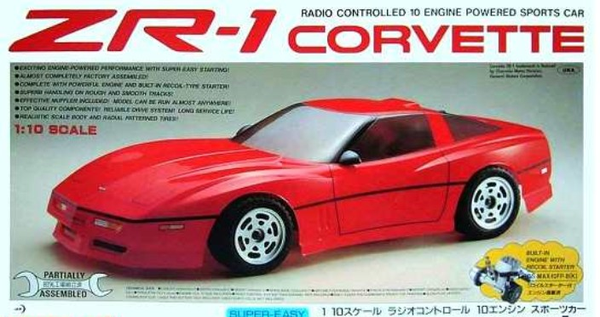

京商 10エンジン ZR1コルベット

引用元画像：京商カタログ
📋 基本情報
| メーカー | 京商（Kyosho） |
|---|---|
| 機種名 | ZR1コルベット（ZR-1 Corvette） |
| シャーシ略称 | 10エンジン ZR1コルベット |
| 型番 | 3071 / 3071G |
| 発売時期 | 1989年 |
| 価格 | 詳細不明 |
| 生産状況 | 生産終了 |
| カテゴリー | ラジコンカー（1/10スケール エンジンRCカー） |
| サブカテゴリー | 10エンジンスケールカー（オンロード） |
| シリーズ | Rampageシャーシベース |
📏 シャーシスペック
| スケール | 1/10スケール |
|---|---|
| 全長 | 詳細不明 |
| 全幅 | 詳細不明 |
| 全高 | 詳細不明 |
| ホイールベース | 詳細不明 |
| トレッド | 詳細不明 |
| タイヤ幅/径 | 詳細不明 |
| フレーム | アルミプレートシャーシ（Rampageベース） |
| 全備重量 | 詳細不明 |
⚙️ 駆動系
| 駆動方式 | リアドライブ2WD |
|---|---|
| デフギヤ | ギヤデフ |
| ギヤ比 | 詳細不明 |
| ギヤピッチ | 詳細不明 |
| トランスミッション | 工場組立て済みギヤボックス（Rampageベース） |
| エンジン | OS MAX-10FP B(K) または GS11-CR ※リコイルスターター方式採用 |
🔧 サスペンション
| 形式 | ダブルウィッシュボーン独立懸架（前後） |
|---|---|
| サスアーム | 詳細不明（Rampageベース） |
| ダンパー | コイルスプリング+オイルダンパー |
| ステアリング | 詳細不明 |
💡 特徴
10エンジンクラスの画期的なスケールカー
- サイズ的に手頃ながら、市販製品の少なかった10クラスのエンジンカー
- リアルなスケール感のコルベットZR-1ボディを搭載
- 1989年当時の最新スポーツカーを忠実に再現
リコイルスターター方式の採用
- エンジンカーのネックであった始動方法に、リコイルスターター方式を新開発
- 燃料タンクを満たし、エンジンをプライミングし、グロープラグに電源を接続し、リコイルスターターを1～2回引くだけでエンジン始動
- 初心者でも簡単にエンジンを始動できる画期的なシステム
- 電動カー並みの手軽さをGPカーで実現した革新的技術
Rampageシャーシベースの優れたハンドリング
- 京商Rampage（型番3072）と同じシャーシを採用
- アルミプレートシャーシによる高剛性
- ギヤデフ、コイルスプリング+オイルダンパー、ドッグボーンドライブシャフト、ブッシング仕様
- 工場組立て済みサスペンションとドライブトレイン
組み立てやすいセミアッセンブリーキット
- 機械パーツ（サスペンション、ドライブトレイン）は工場組立て済み
- ラジオコントロール機器を取り付け、ボディを装飾するだけで完成
- 初心者でも自信を持って操作できる設計
- グロープラグ用バッテリーホルダー、リード線、コネクターが付属（単3電池使用）
高いカスタマイズ性
- チューニングと調整により、ハンドリングとステアリング能力を改善
- タイトでスリッピーなコーナーでグリップを維持するための細かい設定変更が可能
- Rampageシリーズとパーツ互換性あり
🔧 ぽすとそに工房での修理実績
修理難易度
★★★★★（非常に困難）
絶版で、パーツがほぼ見当たらず、情報もほぼないため、修理は極めて困難です。
よくある故障・注意点
- リコイルスターターの紛失や破損（入手困難）
- 10エンジンのメンテナンス不足による不調
- 燃料タンクやフューエルラインの劣化
- ギヤデフの摩耗やグリス不足
- オイルダンパーのオイル漏れや劣化
- プラスチックパーツの経年劣化・破損
修理のポイント
- リコイルスターターの代替部品を探すか、現代のエンジンスターター方式への換装を検討
- エンジンメンテナンスは定期的に実施（グロープラグ交換、キャブレター調整など）
- 燃料タンクとフューエルラインは現代の製品に交換推奨
- ギヤデフは分解清掃とグリスアップが重要
- オイルダンパーのオーバーホールまたは現代品への交換を検討
- Rampageシリーズとパーツ互換性があるため、流用可能な部品を探す
その他の特徴
- リコイルスターター方式の歴史的価値が高いコレクターズアイテム
- 1989年当時のGPカー技術革新を象徴するモデル
- 10エンジンクラスの希少性が高く、現存する個体が少ない
- リアルなZR-1コルベットボディはスケールモデルとしても魅力的
- Rampageシャーシベースのため、一部パーツは流用可能